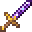

PVP 与安全区
所有世界都开着 PVP：哪里能打、哪里不能打，还有几种「按人」的保护
一句话
2026-11-28 起所有世界都开 PVP，野外玩家之间能互相攻击。但 🌸 茶屋镇出生区和领地里默认是安全区，刚进服的新手有 🔰 新手保护，同公会的伙伴互相打不了，玩家打玩家的伤害统一 ×0.6。打怪不受任何影响。
哪里能打
| 地方 | 能不能 PVP | 谁能改 |
|---|---|---|
| 主世界城外（野外）、资源世界、下界、末地 | 能 | — |
| 🌸 茶屋镇出生区（主城保护范围，含环城庄园、商业街铺位） | 不能，新手安全区 | — |
| 🛡 普通领地（金铲子圈的地） | 默认不能 | 领地主人：/lingdi → ⚑ 领地规则 → ⚔ PVP，见 领地规则 |
| 🏡 私人领地 / 🏘 小镇 | 默认不能 | 领主 / 镇长：⚑ 规则 → ⚔ PVP，见 小镇规则 |
| 小镇子领地 | 跟着小镇；子领地主人只能更严（小镇开着时可以在自己那块关掉） | 子领地主人 |
| ✦ 星渊 | 只保护队友：同一支 👥 小队、或正在同一趟星渊里的人互相打不了；不是队友就能打 | — |
- 出手的人和挨打的人任何一方站在安全区里就打不了：站在安全区里往外射、从外面往里射都不行。
- 进出茶屋镇出生区时动作栏会提示「🌸 进入茶屋镇出生区 · 这里禁止 PVP」/「⚔ 离开茶屋镇出生区 · 野外可以 PVP（领地 / 小镇里默认不能打）」。
- 走进主人开了 PVP 的领地、私人领地、小镇或子领地时，动作栏提醒「⚔ 这里开着 PVP：主人允许玩家互相攻击，小心！」。
按人的保护
不管在哪个世界都生效，和上面「按地方」的规则叠加，任何一条拦下就打不了。
| 规则 | 内容 |
|---|---|
| 🔰 新手保护 | 第一次进服起累计在线不满 60 分钟，别的玩家打不了你。进服 3 秒后聊天栏会告诉你还剩多少分钟。你主动打中别的玩家，保护马上结束，以后也不会再有。两个都在保护期的新手互相打不了 |
| 🛡 同公会免伤 | 同一个 公会 的成员之间互相打不了（星渊里也一样） |
| ✦ 星渊队友 | 同一支小队 / 同一趟星渊的队友之间，近战、弓箭、狼、负面药水、点燃、鱼竿拉人都打不着 |
| ⚖ 伤害 ×0.6 | 玩家打玩家的最终伤害统一乘 0.6（锻造星级、传奇武器、附魔、专精加成都算完再乘），不会被一刀秒；打怪不变 |
被拦下时，出手的人动作栏会写原因，比如「🔰 对方还在新手保护期（约 N 分钟），打不了」「🛡 同公会的伙伴之间不会互相伤害」「🌸 茶屋镇出生区禁止 PVP」。
安全区拦哪些攻击
- 近战、弓 / 弩 / 三叉戟 / 烟花等投射物、鱼竿钩人（伤害和往回拉都拦）。
- 你的狼替你打人、唤魔者尖牙、三叉戟引雷，都算你出手。
- TNT、TNT 矿车、末影水晶、床 / 重生锚爆炸：炸不到站在安全区里的人。
- 喷溅 / 滞留药水的负面效果（剧毒、虚弱、缓慢、瞬间伤害……），正面效果照常给。
- 火焰附加 / 火矢点燃别人；在别人身边 4 格内倒岩浆、用打火石点火（没人的地方照常能用）。
打架中的限制
你真的打中别人、或被别人打中之后，15 秒内算「打架中」：
- 不能
/home、/spawn、/tpa逃跑； - 不能扔东西；
- 这时下线会直接死亡，等 15 秒过了再下线。
被安全区、新手保护、同公会拦下的攻击不算打中，不会让人进入打架状态。
被打死会掉东西吗
和被怪打死一样，开 PVP 没有改死亡规则，见 死了怎么办。星渊里死了照旧不掉东西。
不想被打：待在出生区或自己的领地里（领地默认不开 PVP），出远门前加个公会、和朋友组队；新手头 60 分钟别主动打人，保护就一直在。
常见问题
我在自己领地里会被打吗？
不会，普通领地、私人领地、小镇默认都不开 PVP。只有主人自己在 ⚑ 规则里打开 ⚔ PVP，那块地才能打，走进去时会有提醒。
新手保护到了 60 分钟还能续吗？
不能。累计在线满 60 分钟自动结束；提前主动打中别人也会结束。
同公会的人在星渊里能打我吗？
不能。同公会免伤在星渊里也生效；星渊里另外还保护同一支小队的队友。